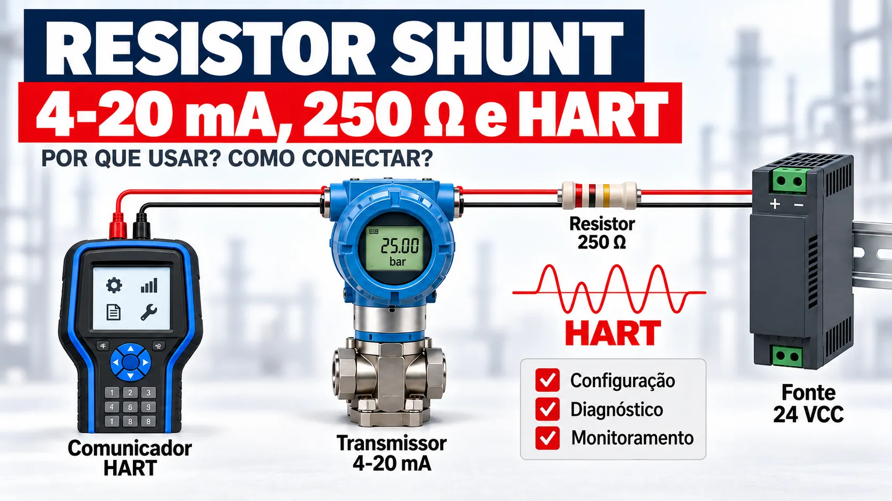

Comunicação HART falhando: resistência, cabo, fonte e carga da malha
Conteúdo técnico: ALOGY Engenharia · Atualizado em: 11/09/2026

Uma malha pode indicar corretamente 4–20 mA e, ainda assim, não responder ao comunicador HART. A corrente contínua transporta a variável de processo; o sinal digital é sobreposto à mesma fiação e depende também da impedância vista no ponto de conexão, da tensão disponível, da capacitância total e da relação sinal–ruído.
O que precisa existir para a comunicação funcionar
Em uma ligação ponto a ponto, o transmissor, a fonte, a entrada analógica, as barreiras e o cabo formam um único circuito. O comunicador pode ser conectado em diferentes pontos, mas deve enxergar impedância suficiente entre sua conexão e a fonte. O manual Rosemount 3051S, por exemplo, exige pelo menos 250 Ω nessa posição; isso é uma condição daquele equipamento e não uma autorização para instalar 250 Ω cegamente em qualquer malha.
Antes de acrescentar resistor, confirme se o cartão HART, isolador ou barreira já possui carga interna. Dois resistores de 250 Ω em série podem elevar a queda de tensão sem resolver uma conexão feita no lado errado da carga.
Orçamento de tensão: resistência demais também falha
A conferência deve ser feita na corrente de pior caso definida para a malha, não apenas em 4 mA. A tensão aproximada nos bornes do transmissor é:
Exemplo: fonte de 24 Vcc, carga de 250 Ω, cabo com 40 Ω no percurso completo e barreira equivalente a 100 Ω. Em 20 mA, a queda é 0,020 × 390 = 7,8 V; restam aproximadamente 16,2 V no instrumento. Se o manual exigir no mínimo 10,5 V, a margem calculada é 5,7 V. Ainda é necessário repetir a verificação na corrente de alarme adotada e considerar tolerância da fonte e temperatura do cabo.
Medir apenas 24 V na fonte não comprova essa margem. Meça também diretamente nos bornes do transmissor, com a malha nas condições relevantes e conforme o procedimento de segurança da planta.
Capacitância, cabo e barreiras
O comprimento máximo não é um número universal. Ele depende da capacitância por metro do par, da capacitância de entrada dos dispositivos, de barreiras e isoladores, além da resistência do percurso. Cabo longo ou inadequado pode atenuar o sinal digital mesmo quando a corrente analógica permanece estável.
- Use capacitância e resistência fornecidas para o cabo instalado.
- Some os dados de barreiras, isoladores, protetores e entradas analógicas.
- Confirme que o cartão está configurado para HART e que filtros ou isoladores não bloqueiam a componente digital.
- Em área classificada, verifique também os parâmetros de entidade e o desenho de controle aprovado.
Ruído, blindagem e ponto de conexão
Cabos de instrumentação roteados junto a saída de inversor, motor ou potência podem receber interferência. A blindagem deve seguir o projeto da instalação; aterramentos improvisados podem criar correntes indesejadas. Confirme também polaridade, aperto de borne, umidade, derivações e emendas.
Se a comunicação funciona junto ao instrumento, mas falha na sala elétrica, investigue o trecho intermediário, a barreira e o cartão. Se falha nos dois pontos, teste em bancada controlada com fonte e carga conhecidas.
Sequência de diagnóstico que reduz tentativa e erro
- Coloque a malha em condição segura conforme o procedimento aprovado.
- Confirme alimentação, polaridade, endereço e topologia.
- Compare a corrente medida com a variável primária indicada pelo host.
- Meça a tensão nos bornes do instrumento na corrente operacional e calcule a carga total.
- Identifique onde está a impedância HART e conecte o comunicador no ponto previsto.
- Teste perto do instrumento e depois após cada barreira, isolador ou borne intermediário.
- Confira cabo, blindagem, capacitância, rota e compatibilidade DD/FDI.
- Registre o que foi medido antes de substituir componentes.
Como interpretar sintomas comuns
| Sintoma | Verificações prioritárias |
|---|---|
| Nenhum dispositivo encontrado | Polaridade, alimentação, endereço, ponto de conexão, impedância e modo HART do cartão. |
| Comunicação intermitente | Margem de tensão, borne frouxo, ruído, umidade, capacitância e blindagem. |
| Funciona em campo, falha no painel | Barreira, isolador, cartão, carga e trecho de cabo entre os dois pontos. |
| Comunica, mas faltam parâmetros | Revisão HART, pacote DD/FDI compatível e suporte do host. |
Ferramentas para testar a hipótese
Referências técnicas
- Emerson — Rosemount 3051S Series Reference Manual, seções de instalação elétrica e comunicação.
- FieldComm Group — HART Application Guide, topologia, cabo, carga e comunicação de malha.
Aviso técnico
Este roteiro é educativo. Para alteração permanente, área classificada, SIS ou malha crítica, use o desenho de controle, a documentação vigente de cada dispositivo, o procedimento da planta e profissional habilitado. Não altere parâmetros com o processo sem condição segura.
Perguntas frequentes
HART pode falhar mesmo com 4-20 mA normal?
Sim. A corrente pode continuar coerente enquanto o sinal digital está atenuado por baixa impedância, capacitância, ruído ou conexão inadequada.
Toda malha HART precisa de resistor externo de 250 Ω?
Não. Cartão, barreira ou isolador pode fornecer a carga. Meça e consulte os manuais antes de acrescentar resistor.
Existe comprimento máximo universal para cabo HART?
Não. O limite depende dos dados do cabo, dispositivos, barreiras, isoladores e topologia.
Onde conectar o comunicador?
No ponto permitido pelo diagrama, com impedância adequada entre a conexão e a fonte.